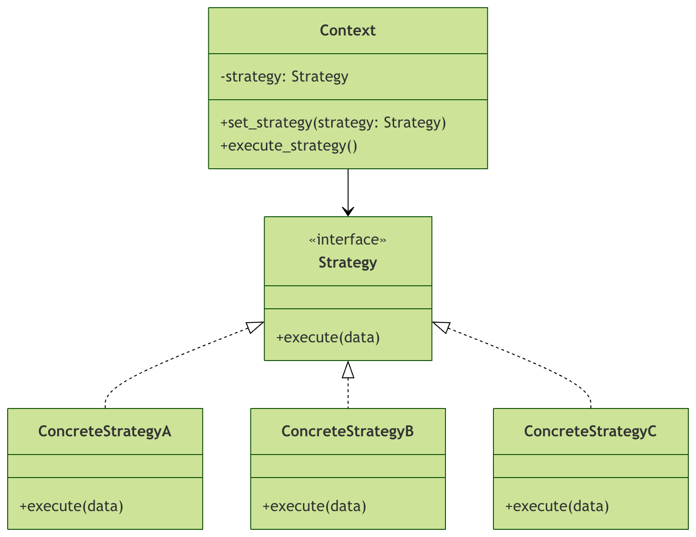

Python ストラテジーパターン
ストラテジーパターンは、実行時にアルゴリズムや動作を選択できるようにする行動デザインパターンです。簡単に言えば、ストラテジーパターンは異なるアルゴリズムを独立したクラスにカプセル化し、それらを相互に置き換えられるようにするものです。
核心理念
レストランで食事を注文する場面を想像してみてください。現金、クレジットカード、モバイル決済など、さまざまな支払い方法を選択できます。どの支払い方法を選んでも最終的に支払いは完了しますが、具体的な支払いプロセスが異なるだけです。これがストラテジーパターンの現実的な例です。
設計原則
ストラテジーパターンは以下の重要な原則に従います：
- オープン・クローズド原則：拡張に対して開き、修正に対して閉じる
- 単一責任原則：各ストラテジークラスは1つのアルゴリズムだけを担当する
- 依存性逆転の原則：具象実装ではなく抽象に依存する
ストラテジーパターンの構造
UMLクラス図を通してストラテジーパターンの構成を理解しましょう：

コンポーネントの説明
Context（コンテキスト）
- ストラテジーオブジェクトへの参照を保持する
- ストラテジーを動的に切り替えられる
- 処理をストラテジーオブジェクトに委譲する
Strategy（ストラテジーインターフェース）
- サポートされるすべてのアルゴリズムの共通インターフェースを定義する
- アルゴリズムを実行するメソッドを宣言する
ConcreteStrategy（具象ストラテジー）
- ストラテジーインターフェースを実装する
- 具体的なアルゴリズム実装を提供する
基本構文と実装
ストラテジーインターフェースの定義
Pythonでは、抽象基底クラス（ABC）を使用してストラテジーインターフェースを定義できます：
例
class PaymentStrategy(ABC):
"""支払いストラテジー抽象基底クラス"""
@abstractmethod
def pay(self, amount: float) -> bool:
"""支払い方法"""
pass
具体的なストラテジーの実装
例
"""クレジットカード支払いストラテジー"""
def __init__(self, card_number: str, expiry_date: str, cvv: str):
self.card_number = card_number
self.expiry_date = expiry_date
self.cvv = cvv
def pay(self, amount: float) -> bool:
print(f"クレジットカードで {amount} 元を支払う")
print(f"カード番号: {self.card_number}")
# ここに実際の支払いロジックを記述する
return True
class AlipayPayment(PaymentStrategy):
"""Alipay支払いストラテジー"""
def __init__(self, account: str):
self.account = account
def pay(self, amount: float) -> bool:
print(f"Alipayで {amount} 元を支払う")
print(f"Alipayアカウント: {self.account}")
# ここに実際の支払いロジックを記述する
return True
class WechatPayment(PaymentStrategy):
"""WeChat Pay支払いストラテジー"""
def __init__(self, openid: str):
self.openid = openid
def pay(self, amount: float) -> bool:
print(f"WeChat Payで {amount} 元を支払う")
print(f"WeChat OpenID: {self.openid}")
# ここに実際の支払いロジックを記述する
return True
コンテキストクラスの実装
例
"""支払いコンテキストクラス"""
def __init__(self, strategy: PaymentStrategy = None):
self._strategy = strategy
def set_strategy(self, strategy: PaymentStrategy):
"""支払いストラテジーを設定"""
self._strategy = strategy
def execute_payment(self, amount: float) -> bool:
"""支払いを実行"""
if not self._strategy:
raise ValueError("支払いストラテジーが設定されていません")
return self._strategy.pay(amount)
完全な例：Eコマース決済システム
完全なEコマース決済システムを通して、ストラテジーパターンの実際の応用をデモンストレーションしましょう：
例
from typing import Dict, Any
# ストラテジーインターフェース
class DiscountStrategy(ABC):
"""割引ストラテジーインターフェース"""
@abstractmethod
def calculate_discount(self, original_price: float) -> float:
"""割引後の価格を計算"""
pass
# 具体的なストラテジーの実装
class NoDiscountStrategy(DiscountStrategy):
"""割引なしストラテジー"""
def calculate_discount(self, original_price: float) -> float:
return original_price
class PercentageDiscountStrategy(DiscountStrategy):
"""パーセント割引ストラテジー"""
def __init__(self, percentage: float):
if not 0 <= percentage <= 100:
raise ValueError("割引率は0〜100の間でなければなりません")
self.percentage = percentage
def calculate_discount(self, original_price: float) -> float:
discount_amount = original_price * (self.percentage / 100)
return original_price - discount_amount
class FixedAmountDiscountStrategy(DiscountStrategy):
"""固定額割引ストラテジー"""
def __init__(self, discount_amount: float):
if discount_amount < 0:
raise ValueError("割引額は負の数にできません")
self.discount_amount = discount_amount
def calculate_discount(self, original_price: float) -> float:
return max(0, original_price - self.discount_amount)
class SeasonalDiscountStrategy(DiscountStrategy):
"""季節割引ストラテジー"""
def __init__(self, base_discount: float, seasonal_multiplier: float):
self.base_discount = base_discount
self.seasonal_multiplier = seasonal_multiplier
def calculate_discount(self, original_price: float) -> float:
total_discount = self.base_discount * self.seasonal_multiplier
return max(0, original_price - total_discount)
# コンテキストクラス
class ShoppingCart:
"""ショッピングカートクラス"""
def __init__(self):
self.items = []
self._discount_strategy = NoDiscountStrategy()
def add_item(self, item: str, price: float):
"""商品を追加"""
self.items.append({"item": item, "price": price})
def set_discount_strategy(self, strategy: DiscountStrategy):
"""割引ストラテジーを設定"""
self._discount_strategy = strategy
def calculate_total(self) -> float:
"""合計価格を計算"""
total = sum(item["price"] for item in self.items)
return self._discount_strategy.calculate_discount(total)
def display_cart(self):
"""ショッピングカートの内容を表示"""
print("ショッピングカートの内容:")
for item in self.items:
print(f" - {item['item']}: {item['price']}元")
original_total = sum(item["price"] for item in self.items)
final_total = self.calculate_total()
print(f"元の価格: {original_total}元")
print(f"割引後の価格: {final_total}元")
if original_total != final_total:
discount = original_total - final_total
print(f"節約: {discount}元")
# 使用例
def main():
# ショッピングカートを作成
cart = ShoppingCart()
# 商品を追加
cart.add_item("Pythonプログラミング書", 89.0)
cart.add_item("ワイヤレスマウス", 129.0)
cart.add_item("メカニカルキーボード", 399.0)
print("=== 割引なし ===")
cart.set_discount_strategy(NoDiscountStrategy())
cart.display_cart()
print("\n=== 2割引 ===")
cart.set_discount_strategy(PercentageDiscountStrategy(20)) # 2割引
cart.display_cart()
print("\n=== 50元引き ===)
cart.set_discount_strategy(FixedAmountDiscountStrategy(50))
cart.display_cart()
print("\n=== 季節割引 ===)
cart.set_discount_strategy(SeasonalDiscountStrategy(30, 1.5)) # 基本割引30、季節係数1.5
cart.display_cart()
if __name__ == "__main__":
main()
上記のコードを実行すると、次の出力が表示されます：
=== 无折扣 === 购物车内容: - Python编程书: 89.0元 - 无线鼠标: 129.0元 - 机械键盘: 399.0元 原价: 617.0元 折后价: 617.0元 === 8折优惠 === 购物车内容: - Python编程书: 89.0元 - 无线鼠标: 129.0元 - 机械键盘: 399.0元 原价: 617.0元 折后价: 493.6元 节省: 123.4元 === 满减优惠（减50元）=== 购物车内容: - Python编程书: 89.0元 - 无线鼠标: 129.0元 - 机械键盘: 399.0元 原价: 617.0元 折后价: 567.0元 节省: 50.0元 === 季节性优惠 === 购物车内容: - Python编程书: 89.0元 - 无线鼠标: 129.0元 - 机械键盘: 399.0元 原价: 617.0元 折后价: 572.0元 节省: 45.0元
ストラテジーパターンの応用
1. ストラテジーファクトリーパターン
ファクトリーパターンを組み合わせてストラテジーの生成を管理します：
例
"""割引ストラテジーファクトリー"""
@staticmethod
def create_strategy(strategy_type: str, **kwargs) -> DiscountStrategy:
"""割引ストラテジーを作成"""
strategies = {
"no_discount": NoDiscountStrategy,
"percentage": PercentageDiscountStrategy,
"fixed_amount": FixedAmountDiscountStrategy,
"seasonal": SeasonalDiscountStrategy
}
if strategy_type not in strategies:
raise ValueError(f"サポートされていないストラテジータイプ: {strategy_type}")
return strategies[strategy_type](**kwargs)
# ファクトリーパターンを使用
factory = DiscountStrategyFactory()
# 異なるストラテジーを作成
strategy1 = factory.create_strategy("percentage", percentage=15) # 15%オフ
strategy2 = factory.create_strategy("fixed_amount", discount_amount=100) # 100元引き
2. 動的ストラテジー選択
条件に応じてストラテジーを動的に選択します：
例
"""動的割引セレクター"""
@staticmethod
def select_strategy(user_type: str, total_amount: float) -> DiscountStrategy:
"""ユーザータイプと合計金額に基づいてストラテジーを選択"""
if user_type == "vip":
if total_amount > 500:
return PercentageDiscountStrategy(25) # VIP 500以上で25%オフ
else:
return PercentageDiscountStrategy(15) # VIP 15%オフ
elif user_type == "normal":
if total_amount > 300:
return FixedAmountDiscountStrategy(30) # 一般ユーザー 300以上で30引き
else:
return NoDiscountStrategy()
else:
return NoDiscountStrategy()
# 動的選択を使用
cart = ShoppingCart()
cart.add_item("商品A", 200)
cart.add_item("商品B", 150)
selector = DynamicDiscountSelector()
strategy = selector.select_strategy("vip", cart.calculate_total())
cart.set_discount_strategy(strategy)
cart.display_cart()
ストラテジーパターンの利点と適用シーン
利点の比較
| 特性 | 従来方式 | ストラテジーパターン |
|---|---|---|
| 拡張性 | 既存コードの修正が必要 | ストラテジークラスを追加するだけでよい |
| 保守性 | コードの結合度が高い | 責務が分離され、保守が容易 |
| 柔軟性 | 実行時にアルゴリズムを切り替えにくい | ストラテジーを動的に切り替えられる |
| テスト容易性 | アルゴリズムを単独でテストしにくい | 各ストラテジーを独立してテストできる |
適用シーン
- 複数のアルゴリズムのバリエーション：似たようなクラスが複数あり、一部の動作だけが異なる場合
- 条件分岐を避ける：多数の条件分岐（if-else や switch）の使用を避けたい場合
- 実行時のアルゴリズム選択：実行時に異なるアルゴリズムを選択する必要がある場合
- アルゴリズムのカプセル化：アルゴリズムの詳細を、それを使用するクライアントから分離したい場合
不適切なシーン
- 単純なアルゴリズム：変化がほとんどないアルゴリズムが1つか2つしかない場合、過剰設計になる可能性がある
- クライアントがストラテジーの詳細を知る必要がある：クライアントがストラテジーの具体的な実装を知らなければならない場合
- ストラテジーの数が多すぎる：ストラテジークラスの数が爆発的に増える場合は、他のパターンを検討する
ベストプラクティスと注意事項
コード構成の提案
例
project/
├── strategies/
│ ├── __init__.py
│ ├── base_strategy.py # 基本戦略インターフェース
│ ├── discount_strategies.py # 割引関連戦略
│ └── payment_strategies.py # 支払い関連戦略
├── contexts/
│ ├── __init__.py
│ └── shopping_cart.py # コンテキストクラス
└── main.py
エラーハンドリング
例
"""エラーハンドリング付き割引戦略"""
def __init__(self, base_strategy: DiscountStrategy, fallback_strategy: DiscountStrategy = None):
self.base_strategy = base_strategy
self.fallback_strategy = fallback_strategy or NoDiscountStrategy()
def calculate_discount(self, original_price: float) -> float:
try:
return self.base_strategy.calculate_discount(original_price)
except Exception as e:
print(f"割引計算エラー: {e}、代替戦略を使用します")
return self.fallback_strategy.calculate_discount(original_price)
パフォーマンスの考慮事項
パフォーマンスが重要なシナリオでは、以下の最適化を検討できます：
例
class CachedDiscountStrategy(DiscountStrategy):
"""キャッシュ付き割引戦略"""
def __init__(self, base_strategy: DiscountStrategy):
self.base_strategy = base_strategy
@lru_cache(maxsize=128)
def calculate_discount(self, original_price: float) -> float:
return self.base_strategy.calculate_discount(original_price)
実践演習
演習1：ソートストラテジーの実装
複数のソートアルゴリズムをサポートするソーターを実装します：
例
from typing import List
class SortStrategy(ABC):
@abstractmethod
def sort(self, data: List) -> List:
pass
# TODO: バブルソート戦略を実装
class BubbleSortStrategy(SortStrategy):
def sort(self, data: List) -> List:
# あなたの実装コード
pass
# TODO: クイックソート戦略を実装
class QuickSortStrategy(SortStrategy):
def sort(self, data: List) -> List:
# あなたの実装コード
pass
# TODO: マージソート戦略を実装
class MergeSortStrategy(SortStrategy):
def sort(self, data: List) -> List:
# あなたの実装コード
pass
class Sorter:
def __init__(self, strategy: SortStrategy = None):
self._strategy = strategy
def set_strategy(self, strategy: SortStrategy):
self._strategy = strategy
def sort_data(self, data: List) -> List:
if not self._strategy:
raise ValueError("ソート戦略が設定されていません")
return self._strategy.sort(data)
# あなたの実装をテスト
data = [64, 34, 25, 12, 22, 11, 90]
sorter = Sorter(BubbleSortStrategy())
result = sorter.sort_data(data)
print(f"ソート結果: {result}")
演習2：ファイル圧縮ストラテジー
複数の圧縮形式をサポートするファイル圧縮器を設計します：
例
class CompressionStrategy(ABC):
@abstractmethod
def compress(self, file_path: str) -> str:
pass
@abstractmethod
def decompress(self, file_path: str) -> str:
pass
# TODO: ZIP圧縮戦略を実装
class ZipCompressionStrategy(CompressionStrategy):
def compress(self, file_path: str) -> str:
# あなたの実装コード
pass
def decompress(self, file_path: str) -> str:
# あなたの実装コード
pass
# TODO: GZIP圧縮戦略を実装
class GzipCompressionStrategy(CompressionStrategy):
def compress(self, file_path: str) -> str:
# あなたの実装コード
pass
def decompress(self, file_path: str) -> str:
# あなたの実装コード
pass
class FileCompressor:
def __init__(self, strategy: CompressionStrategy = None):
self._strategy = strategy
def set_strategy(self, strategy: CompressionStrategy):
self._strategy = strategy
def compress_file(self, file_path: str) -> str:
if not self._strategy:
raise ValueError("圧縮戦略が設定されていません")
return self._strategy.compress(file_path)
def decompress_file(self, file_path: str) -> str:
if not self._strategy:
raise ValueError("圧縮戦略が設定されていません")
return self._strategy.decompress(file_path)
まとめ
ストラテジーパターンはPythonで非常に実用的なデザインパターンであり、アルゴリズムを独立したストラテジークラスにカプセル化することで、優れた拡張性と柔軟性を提供します。この記事の学習を通じて、以下のことができるようになるはずです：
- ストラテジーパターンの核心的な概念と適用シナリオを理解する
- ストラテジーパターンの基本的な実装方法を習得する
- 実際のプロジェクトでストラテジーパターンを適切に適用する
- ストラテジーパターンのよくある誤用を避ける
クリックしてノートを共有
<p style="font-size:14px;">ノートはこの記事の内容を拡張したものである必要があります！</p><br> <p style="font-size:12px;"><a href="../tougao.html" target="_blank">記事の投稿は、ここをクリックしてください</a></p> <p style="font-size:14px;"><a href="../w3cnote/runoob-user-test-intro.html" target="_blank">登録招待コードの取得方法</a></p> <h3 class="text-muted"><i class="fa fa-info-circle" aria-hidden="true"></i> ノートを共有する前に必ず<a href=";.html" class="runoob-pop">ログイン</a>してください！</h3> <p><a href="../w3cnote/runoob-user-test-intro.html" target="_blank">登録招待コードの取得方法</a></p>